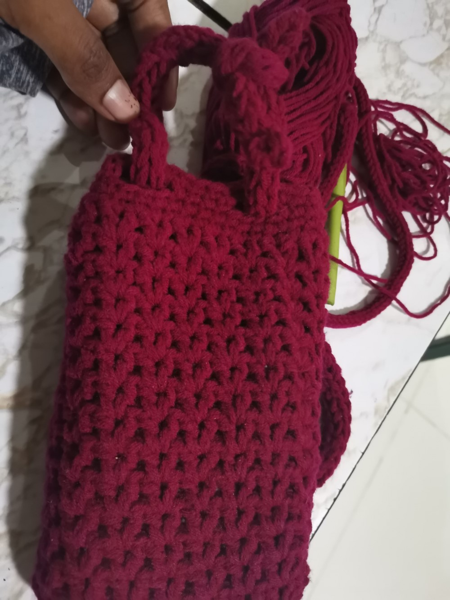

My Crochet Works
Here are some of the crochet work I have made. You can see more of my crochet work on my Instagram page.
Crocheting is one of my favourite pass times and hobbies. I always like to try something new.
Crocheting is simple and is a great stress reliever.
I started crocheting around the age of 12 as something to do because I found it interesting at the time. As time went on, I got really good at it. I can finish a project within a day or a few hours depending on the type of the project and the amount of time I have.

I made this small bag for my phone for carrying around the house. Later on, I gave it to one of my friends.